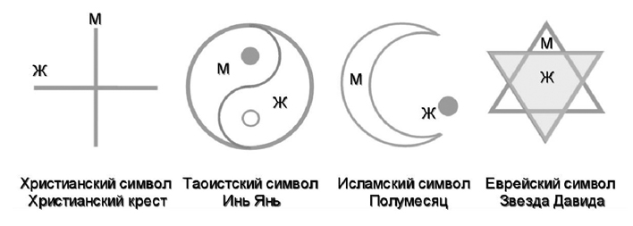

Два великих начала - две энергии: мужская и женская,
взаимное отношение между ними
Чтобы существовать, Великое Единое Целое – Пространство Ума – разделило себя на две половины – мужское и женское начало. Так появились мужской и женский умы и присущие им качества. Эти две силы, каждая из которых обладает собственными качествами и свойствами в целом и едином пространстве Ума. Также они обладают ими как внутри человека, так и в окружающем его мире. Силы обладают и движениями. Когда движения мужского и женского начал встречаются, рождается Целое, а с ним и Жизнь. В каждом человеке содержатся мужское и женское начала, именно поэтому он существует как Целое, как Жизнь. Каждый человек изначально внутри себя знает, что такое любовь, то есть единство.
Мужчина – это Небо, вертикаль, твёрдость, огонь, сила и т.д.. Женщина – это Земля, горизонталь, круг, мягкость, вода, слабость и т.д.. Когда эти качества, которые содержатся в каждом из начал, определены, появляются чувства, а когда узнаются чувства, мужчина и женщина ощущают себя в потоках самих настоящих соответствующих энергий и становятся видимыми.
Эти энергии как мужской и женский принцип в Боге - суть два полюса бытия одного Существа и представляют две его противоположные стороны или два потока энергии - отрицательный и положительный, отражаются на проявлении всего, что в нем содержится.
Во всех религиях и их символических знаках эти большие два начала были заложены следующим видом символов и представлены на рис. 1.

Рис. 1
В ведическом русском языке кроме единственного и множественного числа существует и двойственное число, т.е. значение слова – ПАРА. Любая пара подразумевает две связанные друг с другом противоположности. То есть единство противоположностей. Двойственное число означает, что человек ВСЕГДА знает о существовании противоположности и в своих действиях ВСЕГДА принимает её во внимание, ОТСЧИТЫВАЯ ОТ НЕЁ СВОЁ СУЩЕСТВОВАНИЕ. Это как если бы вы делали что-то рядом с обрывом и всегда принимали во внимание его край. То есть своё местоположение, время, действия, окружающие вещи, поведение людей, собственное поведение вы всегда отсчитываете от противоположности. Что это даёт? Ощущение надёжности и непоколебимой опоры. Принятие противоположности и опора на неё дают Силу. В двойственном числе подразумевается и рассматривается как ЕДИНОЕ целое мужчины и женщины, отсюда в русском языке называется - пол – полом (жен. пол и муж. пол), подразумевая под этим половину этого целого. В этом значении мужчина и женщина творили вместе, можно «сказать рука об руку».
Что происходит, когда теряется единство противоположностей? Или скажем, когда человек теряет руку? Сила отсутствующей руки перетекает в оставшуюся. Происходит компенсация, и оставшаяся рука становится значительно сильнее.
Когда мужчина отделился от женщины, мужской ум-эго необыкновенно усилился. Сила Жизни, которую он черпал из единства с женщиной, покинула его. Поэтому мужское начало ослабело. Мужчина частично потерял свой линейный ум и приобрёл разделяющий рациональный ум. Вместо существовавшего в нём раньше нелинейного ума, который олицетворяет женщину, он приобрёл страхи. Именно они делают его слабым.
Когда женщина отделилась от мужчины, женский ум-эго необыкновенно усилился. Сила (Поле) Жизни, которую она черпала из единства с мужчиной, ушла. Поэтому женское начало ослабело. Женщина частично потеряла свой нелинейный ум. Вместо существовавшего ранее линейного ума, на который она опиралась, женщина приобрела чувство вины, чувство жертвы и страхи. Вина, унижение, общее презрение мужчин и страхи делают женщину несостоявшейся и зависимой.
Получается, что когда внешнее отделяется от внутреннего и наоборот, то это ещё больше усиливает ум-эго и замыкает его на самом себе. Человек оказывается в собственной «скороварке». Сила Жизни, которую человек получал от опоры – покинула его. Отсюда слабость человека.
Когда мужчина или женщина теряются в энергиях Великих начал, то появляются проблемы: одиночество - моно, отсюда выражение демонизм, т.е. преобладание одной из энергий; если преобладает одна мужская энергия, то это – война, деспотизм, диктаторство; а, если одна женская, то это – хаус, магия, интриги. Отсюда болезни Духа, Души и Тела.
Человек пришел в эту жизнь, чтобы научиться любить и выстраивать гармоничные взаимоотношения в семье и с миром. Взаимоотношения в семье между женщиной и мужчиной через правильно выстроенные жизненные ценности являются той творческой основой, которая дает развитие человечества — это любовь и гармония жизни, как основа творчества на Земле.
Каждая душа приходит на Землю с основной задачей - научиться Любви. Цель одна, а путей для её достижения великое множество. Учиться Любви предстоит через взаимоотношения, через общение с окружающим миром. В эзотерике принято считать, что наша душа, находясь еще на небесах, сама выбирает себе родителей в соответствии с теми задачами, через которые ей предстоит пройти самые ценные и полезные уроки. И от того, каким будет наше самое близкое окружение - наша семья - родители, братья и сёстры, бабушки и дедушки, тёти и дяди, во многом зависит наше с вами будущее, т.к. каждый из них играет свою особую роль в сотворении наших привычек, характера, мировоззрения. Иными словами, в сотворении того пространства Любви, в котором нашей душе предстоит максимально раскрыться и реализовать себя.
«Великая энергия Любви, на Землю посланная Богом для своих детей, приходит к каждому однажды. Бывает, и не раз, стремится обогреть собою человека и с ним остаться навсегда. Но большинство людей остаться с ними энергии Божественной великой не дают. Представь, встречаются однажды она и он в сиянии Любви прекрасном. Стремятся жизнь свою соединить навечно. Считают, что прочней союз их, будет, скреплённый на бумаге и ритуалом при скоплении свидетелей большом. Но тщетно. Лишь несколько проходит дней, энергия Любви их покидает. И так почти у всех.
- Да, ты права, Анастасия. Разводится огромное количество людей. Процентов семьдесят. А те, что не разводятся, бывает, живут как кошка с собакой, или равнодушными живут друг к другу. Известно это всем, но почему такое в массовом порядке происходит, не ясно никому. Ты говоришь, энергия Любви их покидает, но почему? Как будто дразнит всех она или в какую-то свою игру играет?
- Любовь не дразнит никого и не играет. Стремится с каждым вечно жить, но человек сам образ жизни избирает, и образ жизни тот энергию Любви пугает. Любовь не может разрушенью вдохновение дарить. Плоду Любви негоже в муках жить, когда совместно начинают строить жизнь он и она. Когда в квартирке, словно в каменном, безжизненном стремятся поселиться склепе. Когда у каждого своя работа и интересы, окружение своё. Когда дел общих нет для будущего, нет совместного стремленья. Когда лишь плотскою утехой увлекаются тела, чтобы потом ребёнка своего отдать на растерзанье миру, в котором чистой нет воды, бандиты, войны и болезни. От этого энергия Любви уходит».
В. Н. Мегре, "Сотворение" - Kнига 4
из серии "Звенящие кедры России
Из понимания многих современных людей ушло крепкий род, крепкая семья. Остановилось сознание в продолжение Рода и его чистоты. По сути, и является главной основой существования Рода человечества – это его продолжение.
Предлагаем понять ту самую суть, о чём наши прародители понимали и ведали, что Любовь, Лад, Согласие, Радость и Взаимоуважение – это истинная Гармония, которая наступает тогда, когда есть Единство Противоположностей. Всё это было в Ведические времена. И по сей день вновь нас учит действующий энергетический Вселенский канон, в котором последовательно выстроились приоритеты духовно-нравственного внутреннего и внешнего мира Человека. В этом мире на первом месте стоит – Единение Рода, а то есть:
- Взаимные светлые, чистые отношения супругов в совместном сотворении Пространства Любви: Радости, Благополучия, Счастья, Добра, Удачи, Процветания – это СЕМЬЯ.
- В Любви творение детей своих.
- Почитание и уважение своих родителей, родственников, которых не делили на хороших и плохих, т. к. это был единый Род и каждый человек ведал, что придёт время, и им надо будет снова воплощаться, рождаться в своём Роду.
- Любимое занятие – сотворчество в труде на благо своей Семьи, своего Рода, своей Общины, своей Державы.